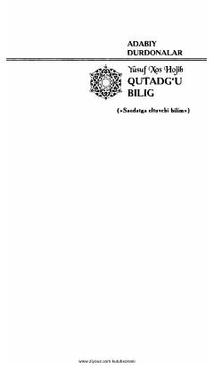

QBBaxt va saodatga erishtiruvchi qadimiy turkiy hikmatlar va pand-nasihatlar to‘plami.
Ushbu asar turkiy xalqlar madaniyatining noyob durdonasi bo‘lib, baxt va saodatga erishtiruvchi bilimlar majmuasidir. Yusuf Xos Hojib tomonidan XI asrda yozilgan doston insonni komillikka, donishmandlikka va axloqiy poklikka chorlaydi.